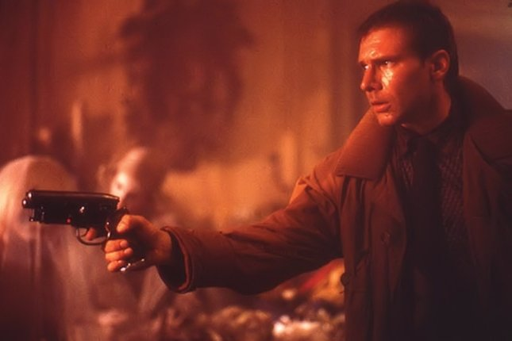

The original Blade Runner, adapted by Hampton Fancher and David Peoples from Philip K. Dick’s novel “Do Androids Dream of Electric Sheep?” which premiered in 1982, starred Harrison Ford as ‘Blade Runner’ Rick Deckard, a special agent of the Los Angeles police department hired to hunt down and ‘retire’ (i.e. exterminate) so-called replicants – androids, virtually indistinguishable from humans, which are manufactured by the powerful Tyrell Corporation for use on off-world colonies, but banned on Earth.
The film, which saw Harrison Ford starring opposite Rutger Hauer playing Roy Batty, leader of a small group of the renegade Nexus-6 replicants, initially polarised critics and performed poorly at the box office, but has since become a cult classic and, along with the Alien, one of the two most revered science fiction films by Ridley Scott.
And while Alien got since its release three, more-or-less successful sequels, with the fourth one, tentatively titled Alien: Xeno already in the making, it’s been almost 33 years since Blade Runner’s premiere, with any sequel yet to be made.
At least since 2007, when Warner Bros. released ‘Blade Runner - The Final Cut’, a 25th anniversary digitally re-mastered version on which Ridley Scott had complete artistic freedom, Scott considered developing a follow-up film and made several announcements with regards to this, the last one in 2012, when he said: “It’s not a rumour – it’s happening. With Harrison Ford? I don’t know yet. Is he too old? Well, he was a Nexus-6 so we don’t know how long he can live. And that’s all I’m going to say at this stage.”
Now, at long last, the Blade Runner sequel has been officially confirmed by Alcon Entertainment, with Harrison Ford set to reprise his role as Rick Deckard and with Academy Award nominee Denis Villeneuve (Prisoners) in negotiations to direct the follow-up.
Ridley Scott, who won’t be directing, but is returning as a co-producer, revealed that Ford’s character will only appear in the third act of the sequel and said about the film earlier:
“Hampton Fancher and I talked at length about what it could be, and came up with a pretty strong three-act storyline, and it all makes sense in terms of how it relates to the first one.”
Alcon Entertainment acquired the film, television and ancillary franchise rights to Blade Runner, which is now generally regarded as one of the best science fiction films ever made, in 2011 from film producer Bud Yorkin, who will be co-producing the sequel.
Film is scheduled to start principal photography in summer of 2016. Film screenwriter and producer Hampton Fancher (co-writer of the original Blade Runner film) and television and film scriptwriter Michael Green (who is also working on a sequel to Ridley Scott’s Prometheus) have written the original screenplay based on the storyline by Fancher and Scott mentioned above.
Alcon Entertainment’s co-founders and CEOs Andrew Kosove and Broderick Johnson announced on 26th February 2015:
“We are honored that Harrison is joining us on this journey with Denis Villeneuve, who is a singular talent, as we experienced personally on Prisoners. Hampton and Michael, with Ridley Scott, have crafted a uniquely potent and faithful sequel to one of the most universally celebrated films of all time, and we couldn’t be more thrilled with this amazing, creative team.”
How will this all eventually work out remains to be seen. Alcon Entertainment produced thus far only two science fiction films: ‘The Book of Eli’, which has received mixed reviews from critics and ‘Transcendence’ which was not only a critical failure, but also flopped at the box office.